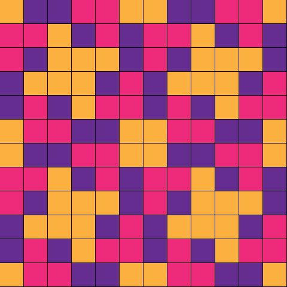
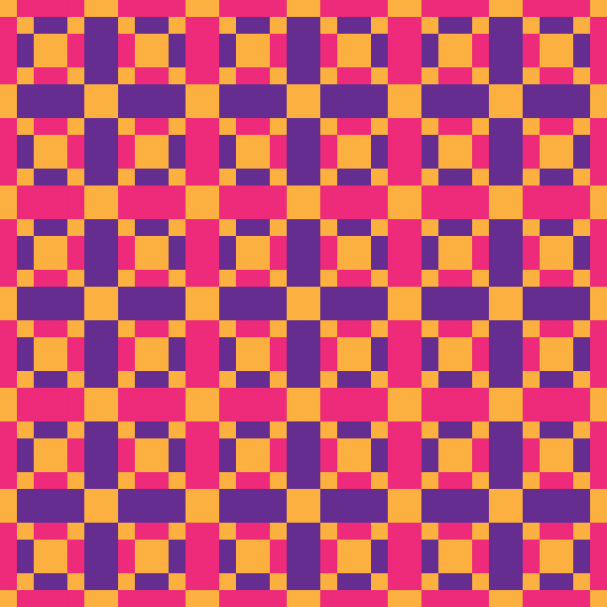
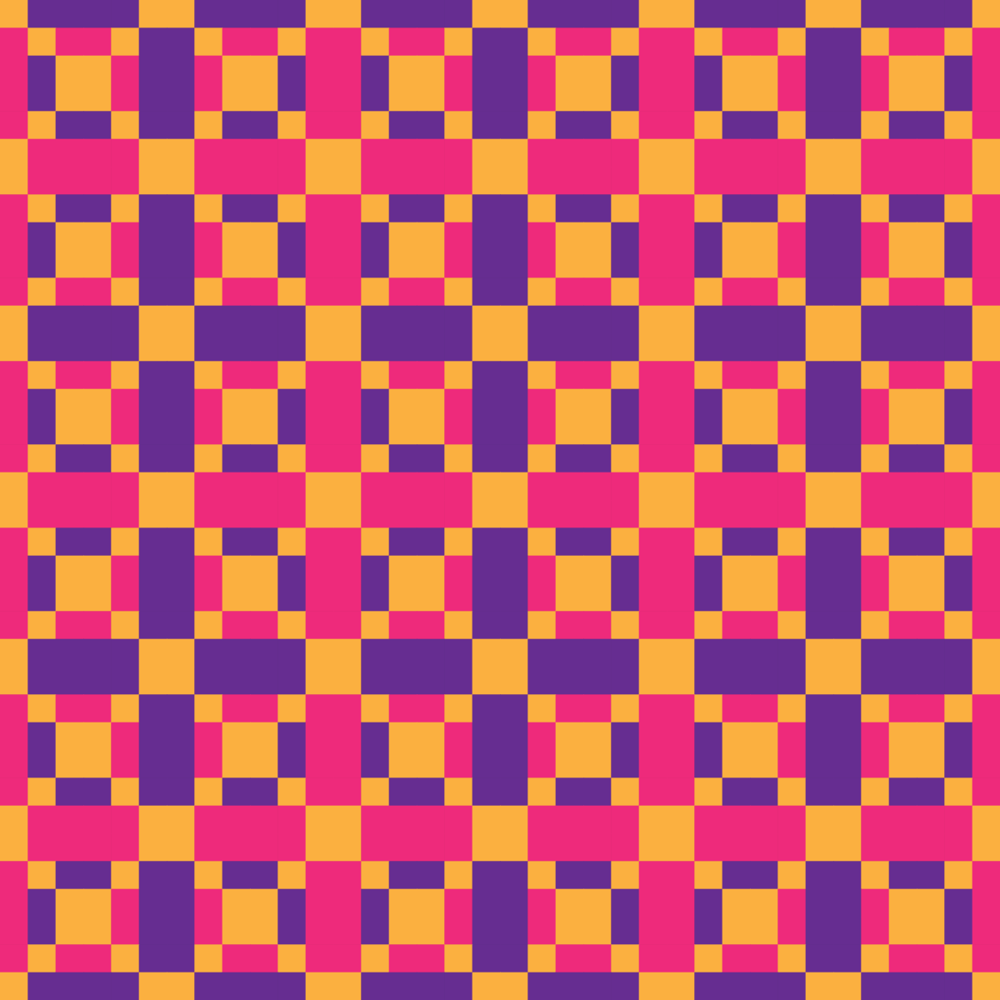
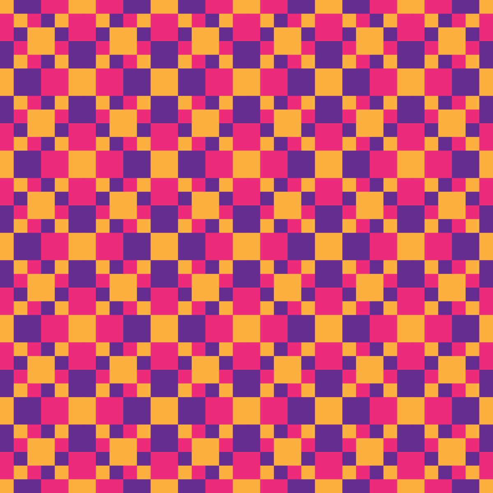
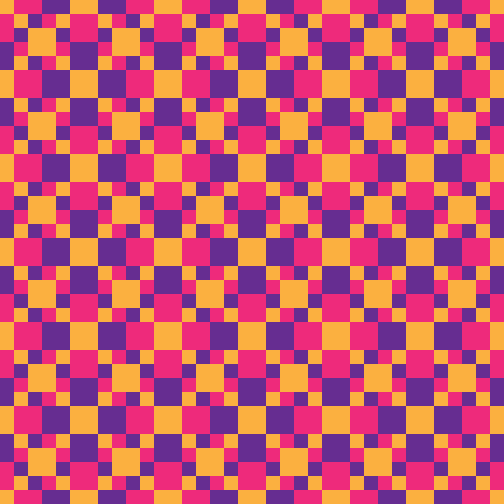
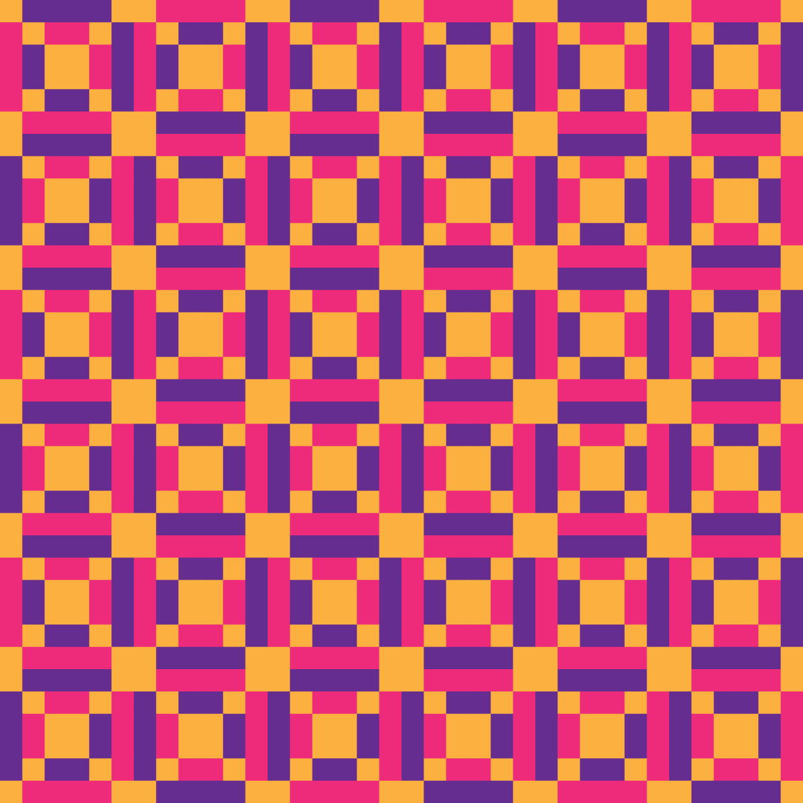
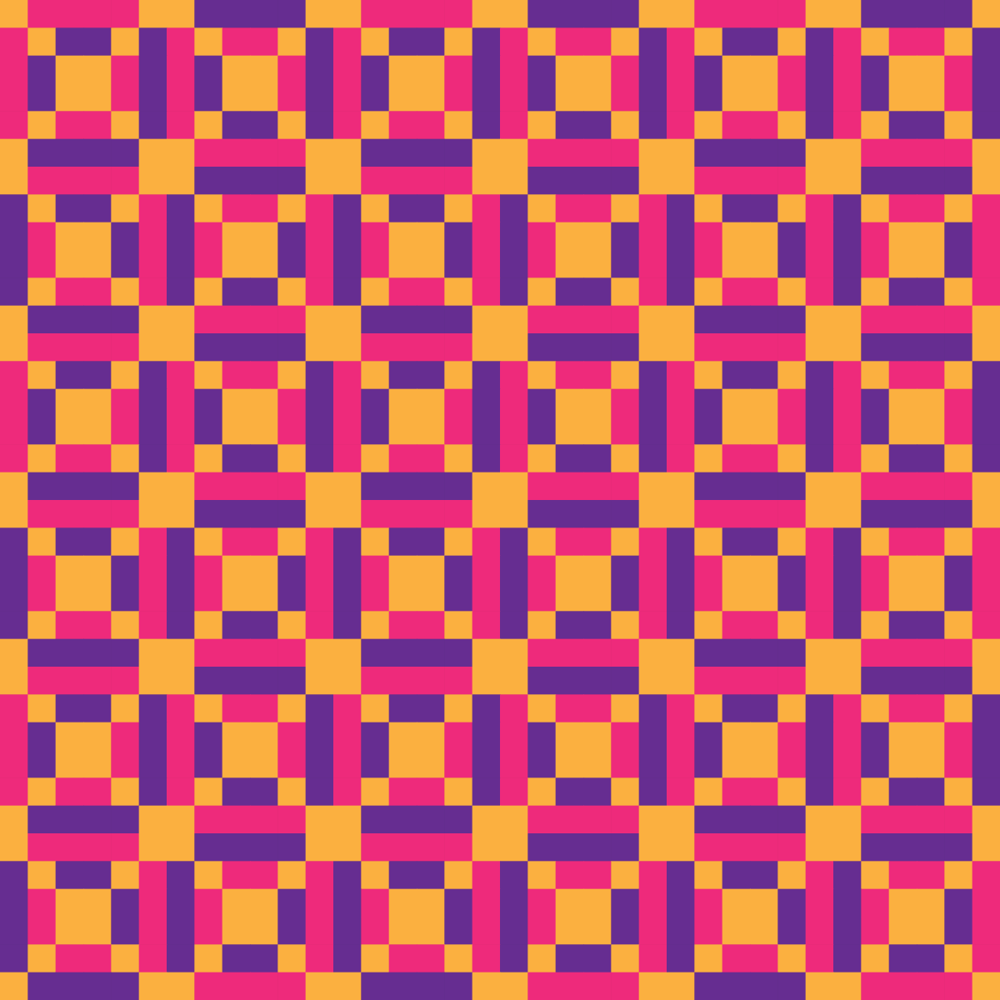
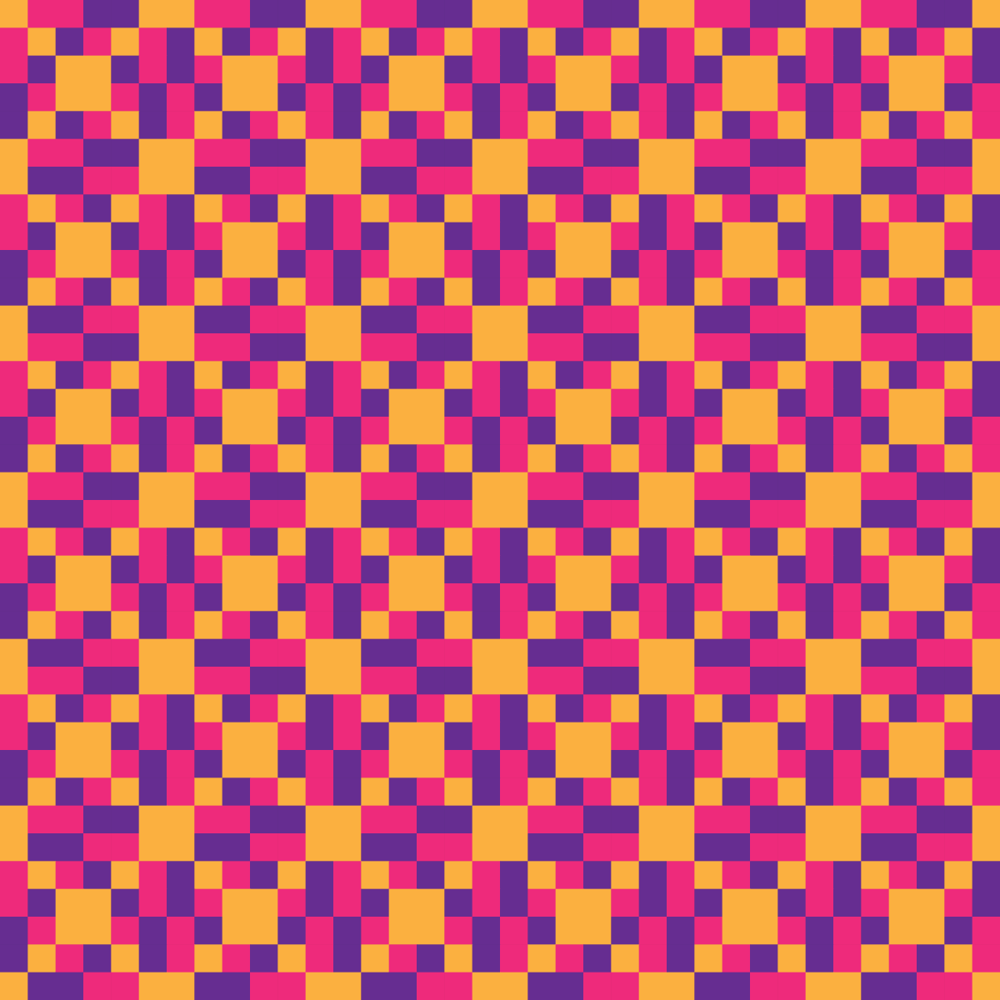
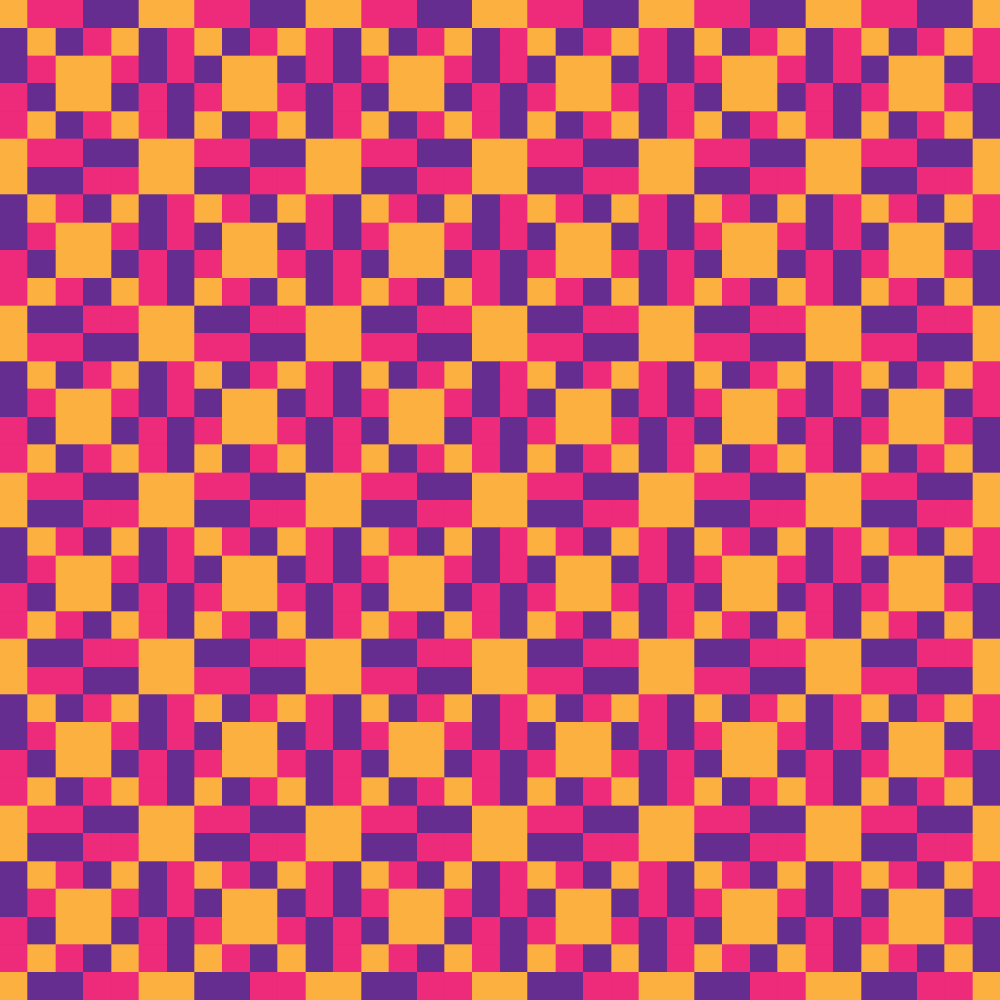

中女
中女
明が重なる――離の象、付く火。光は決して独りでは輝かない。炎が薪を必要とするように、輝き続けるためにしがみつくものを必要とする。支えに依存する輝きの図形である。ゆえに大人は、絶えざる輝きによって四方を照らす。持続して輝くには、自らの光を養うものに結びついていなければならない。
火の明るさは、その輝きを広げるために、生きているものに付く。何も虚空で輝きはしない。あらゆる真の明るさは、広がるための拠りどころ、結びつく物質を必要とする。この爻は、完全な独立は理想ではないと教える。最も純粋な光でさえ、照らすものを必要とする。
六つの爻
地の底で、実が動く。図形全体を支えていた陽の兆しが、座を譲ることを受け入れる。
受け入れる地はその極みに達する。図形の下半を支えていた静かな受容が、いまや立ち現れようとしている。
地と人の境で、力がぐらつく。堅さによって働いていたものが、反転する前にためらう。
人が行うところで、実が限りを見いだす。図形を導いていた働きかけが、自らの内に折れ返る。
賢者の座で、虚が満ちる。静かに治めていた柔らかさが、新たな力を帯びる。
頂で、実は歩みを終えて砕ける。頂点に立ったものは、反転せずにはこれ以上進めない。
出典：La Livrée d'Hermès、Anibal Amiot — 7.1章（81〜86ページ）。このページのフランス語版。
ここで使う概念――魔方陣、層とくじ、易経――はプロジェクトの用語集を参照。
この卦の紋様
この卦は卦 29 — Kan、坎（サイトの番号 18） の二進補数です（63 − 45 = 18）。紋様の形はまったく同じで、色だけが入れ替わります。以下は卦 18（文王の順序 29）の八つの紋様で、許容される家族ごとに一つです（英語のページ）。

Bases — YANG mutant
Bases — YANG
Pair of two — YANG + YIN mutant
Pair of two — YIN mutant + YANG mutant
Pair of two — YIN + YANG
Pair of two — YIN + YANG mutant
Triple — without YANG
Triple — without YANG mutant隣り合う卦
56 — Lu、旅（サイトの番号 44） · 50 — Ding、鼎（サイトの番号 46）
同じ八卦を共有する卦
同じ上卦（☲ 離）：35 — Jin、晋（サイトの番号 40） · 21 — Shi He、噬嗑（サイトの番号 41） · 64 — Wei Ji、未済（サイトの番号 42） · 38 — Kui、睽（サイトの番号 43） · 56 — Lu、旅（サイトの番号 44） · 50 — Ding、鼎（サイトの番号 46） · 14 — Da You、大有（サイトの番号 47）
同じ下卦（☲ 離）：36 — Ming Yi、明夷（サイトの番号 5） · 55 — Feng、豊（サイトの番号 13） · 63 — Ji Ji、既済（サイトの番号 21） · 49 — Ge、革（サイトの番号 29） · 22 — Bi、賁（サイトの番号 37） · 37 — Jia Ren、家人（サイトの番号 53） · 13 — Tong Ren、同人（サイトの番号 61）